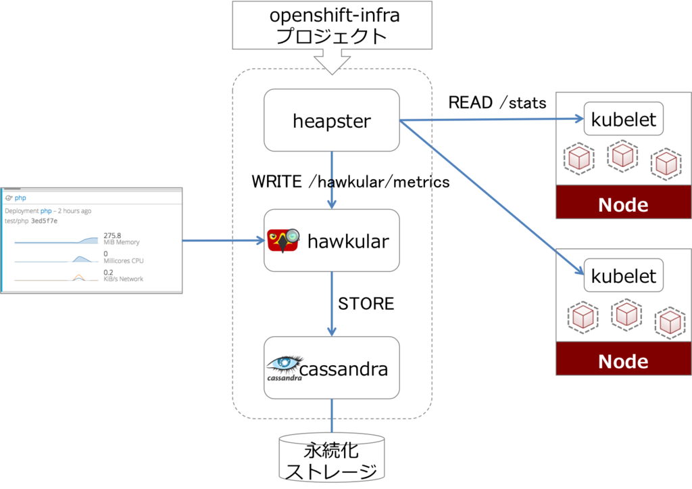
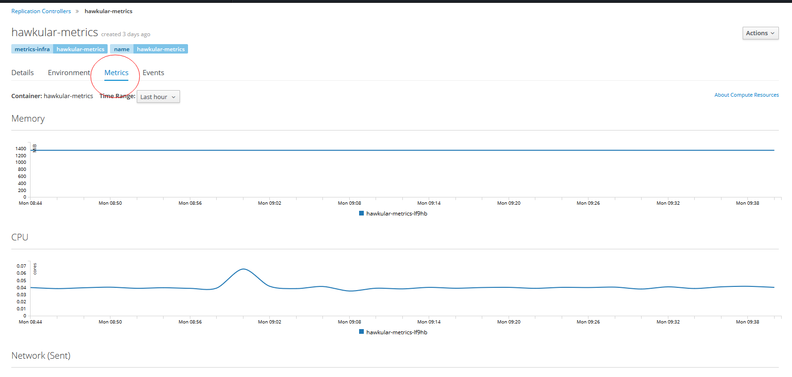

| 版本 | 日期 | 状态 | 修订人 | 摘要 |
|---|---|---|---|---|
| V1.0 | 2018-04-17 | 创建 | 开源方案 | 初始版本 |

安装openshift ansible 软件包
yum install ansible.noarch java-1.8.0-openjdk-headless -y
clone openshift-ansible 项目
cd /opt
git clone https://github.com/openshift/openshift-ansible.git
git checkout origin/release-3.6
[root@openshift-master ~]# cat /etc/ansible/metric_hosts
[OSEv3:children]
masters
nodes
[OSEv3:vars]
ansible_ssh_user=root
openshift_deployment_type=origin
openshift_metrics_install_metrics=True
openshift_metrics_image_prefix=openshift/origin-
#拉取的镜像版本
openshift_metrics_image_version=v3.6.1
openshift_metrics_resolution=10s
#metrics_hawkular服务对外的域名(指向router节点)
openshift_metrics_hawkular_hostname=metrics.ops.com
#master的ip
openshift_metrics_master_url=https://openshift.ops.com
# cassandra 使用临时存储
openshift_metrics_cassandra_storage_type=emptydir
[masters]
openshift-master
[nodes]
openshift-node1
openshift-node2
ansible-playbook -i /etc/ansible/metric_hosts /opt/openshift-ansible/playbooks/byo/openshift-cluster/openshift-metrics.yml
执行结果，部署的快慢根据由拉取镜像的速度决定，成功的结果如下(READY都是1/1表示成功)
# oc get pod -n openshift-infra
NAME READY STATUS RESTARTS AGE
hawkular-cassandra-1-m1p40 1/1 Running 0 4m
hawkular-metrics-lf9hb 1/1 Running 0 4m
heapster-1c2h0 1/1 Running 0 4m
检查master-config.yaml配置
cat /etc/origin/master/master-config.yaml
......
masterPublicURL: https://openshift.ops.com:443
metricsPublicURL: https://metrics.ops.com/hawkular/metrics #确认此选项配置
publicURL: https://openshift.ops.com:443/console/
....
重启master
systemct restart origin-master
